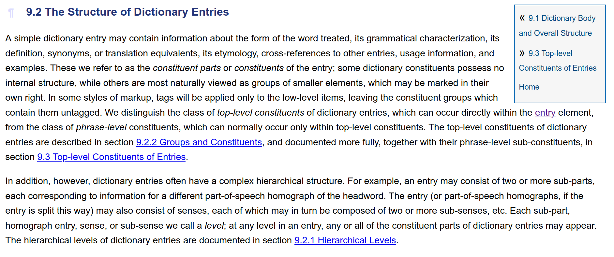

# TEI: Vertiefung am Beispiel von "Dictionaries" <br/> <hr/> <br/>Prof. Dr. Christof Schöch <br/> <br/> <hr/> <p><strong>Modul Auszeichnungssprachen<br/>MSc. Digital Humanities, Universität Trier</strong></p> <hr/> <img height="60" data-src="img/basics/uni-trier.png"> -- ## Überblick 1. Die Module der TEI-Guidelines 2. Das Modul 9: Dictionaries 3. Weitere Perspektiven: TEI Lex-0 -- ## (1) Die Module der TEI-Guidelines --- ### Die 23 Module der TEI <img height="480" data-src="img/E10/TEI-modules.png"/> <a href="https://tei-c.org/release/doc/tei-p5-doc/en/html/index.html">TEI Guidelines: Inhaltsverzeichnis</a> --- ### Projektabhängiges TEI Schema * Motto: "So präzise wie möglich, so flexibel wie nötig" * Funktionen des Schemas * Konsistente Kodierung erlauben * Datenmodell formulieren und kommunizieren * Verarbeitungsroutinen entwickeln * Werkzeug "Roma" für ODD / Schema * https://roma.tei-c.org/ * Beta: https://romabeta.tei-c.org/ --- ### Roma: TEI-ODD-Tool <a href="https://romabeta.tei-c.org/">Neue Version von Roma</a> -- ## (2) Das Modul 9: Dictionaries --- ### Wörterbucheintrag (print, annotiert) <img height="480" data-src="img/E10/wörterbucheintrag-annotiert.jpeg"/> <a href="https://www.tcdh.uni-trier.de/de/projekte/projekte/digitalisierung-der-neubearbeitung-des-deutschen-woerterbuchs/">TCDH: 2DWB</a> --- ### Wörterbucheintrag (online) <img height="480" data-src="img/E10/wörterbucheintrag-darstellung.png"/> <a href="https://www.dwds.de/">DWDS, https://www.dwds.de/</a> --- ### Herausforderungen * Struktur(en) * Wörterbucheinträge sind meist stark strukturiert * Jedes Wörterbuch aber meist auf unterschiedliche Weise * Perspektive(n) * (gedruckte) Wörterbücher haben starke typographische Konventionen * (digitale) Wörterbücher benötigen eine starke (semantische) Struktur --- ### Viele "Standards"! https://doi.org/10.4000/jtei.522 --- ### TEI: Makrostruktur ``` <TEI> <teiHeader> ... </teiHeader> <text> <front>...</front> <body> <entry>...</entry> <entry>...</entry> <entry>...</entry> ... </body> <back>...</back> </text> </TEI> ``` --- ### Kernstück: `<entry>`  <br/> * Haupt-Elemente: u.a. `<form>`, `<gramGrp>`, `<etym>`, `<def>`, `<cit>`, `<usg>`. +* Unterelemente: jeweils eine Reihe von Elementen --- ### Einfaches Beispiel ```xml <entry> <form> <orth>competitor</orth> <hyph>com|peti|tor</hyph> <pron>k@m"petit@(r)</pron> </form> <gramGrp> <pos>n</pos> </gramGrp> <def>person who competes.</def> </entry> ``` --- ### Haupt-Elemente * `<form>`: Wortform (u.a. Schreibung, Aussprache) * `<gramGrp>`: grammatikalische Informationen (bspw. Wortart) – flexibler Ort * `<def>`: Definition(en) / Bedeutung(en) * `<etym>`: Etymologie (Herkunftsgeschichte) * `<cit>`: Zitate / Belege / Verwendungsbeispiele * `<usg>` (usage): Informationen zur Verwendung * u.a.m. --- ### Unterelemente von `<form>` * `<orth>`: Schreibweise * `<pron>`: Aussprache * `<hyph>`: Angabe der Trennstellen * `<syll>`: Angabe der Silbengrenzen * `<gramGrp>`: Angabe der Silbengrenzen (aber: innerhalb von `<form>` --- ### Beispiel für `<form>` ```xml <entry> <form> <orth>biryani</orth> <orth>biriani</orth> <pron notation="ipa">ˌbɪrɪˈa:nɪ</pron> </form> [...] </entry> ``` --- ### Unterelemente von `<gramGrp>` * `<gramGrp>` kann als Unterelement von `<entry>`, `<form>`, `<sense>`, oder `<cit>` vorkommen * Unter anderem mit den Informationen zu: * `<pos>` (part of speech): Wortart * `<gen>`: Gender (maskulin / feminin / neutrum) * `<number>`: Numerus (Singular / Plural) --- ### Beispiel für `<gramGrp>` ```xml <entry> <form> <orth>isotope</orth> </form> <gramGrp> <pos>adj</pos> </gramGrp> </form> [...] </entry> ``` --- ### Element `<def>` * Für die Angabe der Wortbedeutung(en) * Hat keine notwendigen Unterelemente * Kann direkt eine Bedeutungsangabe enthalten * Oder, bei mehreren Bedeutungen, jeweils innerhalb von `<sense>` --- ### Beispiel für `<def>` ```xml <form> <orth>demigod</orth> </form> <sense n="1"> <def>a being who is part mortal, part god.</def> </sense> <sense n="2"> <def>a lesser deity.</def> </sense> <sense n="3"> <def>a godlike person.</def> </sense> </entry> ``` --- ### Unterelemente von `<etym>` * Oft teilweise unstrukturiert, zudem speziell für einzelne Bestandteile: * `<lang>`: Sprache * `<date>`: Datums- / Zeitangabe * `<usg>` (usage): Angaben zur Verwendung * `<mentioned>`: Für Wörter, die als solche genannt werden, statt benutzt zu werden * `<gloss>`: Umschreibung oder Definition eines Wortes --- ### Beispiel für `<etym>` ```xml <entry> <form> <orth>neuma</orth> </form> <etym> <lang>F</lang> fr. <lang>ML</lang> <mentioned>pneuma</mentioned> <mentioned>neuma</mentioned> fr. <lang>Gk</lang> <mentioned>pneuma</mentioned> <gloss>breath</gloss> </etym> <sense> <def>any of various symbols used in the notation of Gregorian chant.</def> </sense> </entry> ``` --- ### Unterelemente von `<cit>` * `<cit>`: Ein Zitat als Beispiel oder Beleg für eine Bedeutung, mit einer Quellenangabe * Üblicherweise mit einem `@type` mit Werten wie "example" oder "translation" * Darin für den zitierten Wortlaut selbst: * `<q>` (quoted - typographisch markiert) oder * `<quote>` (quotation - unmarkiert) * Und `<bibl>` für die Quellenangabe --- ### Beispiel für `<cit>` ```xml <entry> <form> <orth>valeur</orth> </form> <cit type="example"> <quote>La valeur n'attend pas le nombre des années</quote> <bibl> <author>Corneille</author> </bibl> </cit> </entry> ``` --- ### Strukturierung mehrerer `<entry>`s ```xml <superEntry> <entry n="1" type="hom"> <form> <orth>mouse</orth> </form> <def>Small quadruped animal.</def> <!-- ... --> </entry> <entry n="2" type="hom"> <form> <orth>mouse</orth> </form> <def>Pointing device for computers.</def> <!-- ... --> </entry> </superEntry> ``` -- ## (3) Weitere Perspektiven --- ### Trierer Wörterbuchnetz http://www.woerterbuchnetz.de/ --- ### TEI Lex-0 * Austauschformat für die TEI-Kodierung von Wörterbüchern * Stärker standardisiert als in den Guidelines * Zielformat für Kodierung, Vergleichbarkeit und Tool-Entwicklung --- ### Beispieleintrag nach Lex-0 ```xml <entry xml:id="OALD.competitor" type="mainEntry" xml:lang="en"> <form type="lemma"> <orth>competitor</orth> <hyph>com|peti|tor</hyph> <pron>k@m"petit@(r)</pron> </form> <gramGrp> <gram type="pos">n</gram> </gramGrp> <sense xml:id="OALD.competitor.1"> <def>person who competes.</def> </sense> </entry> ``` <br/> * Beachte: `@xml:id` und `@xml:lang` * `<form>` und `<gram>` mit `@type` --- ### Lektürehinweise <small> Referenzlektüre * "TEI Lex-0. A baseline encoding for lexicographic data" [Abschnitte 1-4]. *ELEXIS*. https://dariah-eric.github.io/lexicalresources/pages/TEILex0/TEILex0.html Weitere Empfehlungen * "9. Dictionaries", in: *Guidelines of the Text Encoding Initiative*, P5, Version 4.1.0, 2020. https://tei-c.org/release/doc/tei-p5-doc/en/html/DI.html * Piotr Bański, Jack Bowers, Tomaz Erjavec. "TEI-Lex0 guidelines for the encoding of dictionary information on written and spoken forms." *Electronic Lexicography in the 21st Century: Proceedings of ELex 2017 Conference*, Sep 2017, Leiden, Netherlands. https://hal.inria.fr/hal-01757108 * Gerhard Budin, Stefan Majewski and Karlheinz Mörth. "Creating Lexical Resources in TEI P5. A Schema for Multi-purpose Digital Dictionaries". *Journal of the Text Encoding Initiative*, 3, 2012. https://doi.org/10.4000/jtei.522 </small> --- ### Danke! <br/><br/> <br/><br/> <br/><br/> <hr/> <small> <br/>Lizenz: <a href="https://creativecommons.org/licenses/by/4.0/">Creative Commons Attribution (CC BY)</a>, 2020. </small> <hr/>